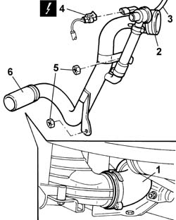

1048B44 RIGID air supply PIPE from heat exchanger to intake manifold - R.R.
- Path
- Procedures > 10 ENGINE > 1048 ENGINE AIR SUPPLY CIRCUIT > 1048B PRESSURE AIR CIRCUIT > 1048B44 RIGID air supply PIPE from heat exchanger to intake manifold - R.R.
- Kind
- repair procedure (removal / refitting; the operation number is the code)
- Applies to
- engines: 2.0 TB; all production periods
- Interactive page
- https://sloeber94.github.io/elrnDB-lThss/en/#/498896
Applies to: engines: 2.0 TB; all production periods
 Removing
Removing
 Refitting
RefittingSee in Op. 7040D50 ENGINE COMPARTMENT UPPER SOUND INSULATION SHIELD - R.R.
See in Op. 1016A40 Ignition COIL COVER on cylinder head - R.R.
See in Op. 1048A50 air inlet pipe to turbocharger - r + r
See in Op. 1048A21 AIR INLET HOSE FROM INTAKE TO FILTER - R.R.
See in Op. 1048A10 COMPLETE AIR FILTER -R.R.
See in Op. 1048A54 TURBOCHARGER air inlet HOSE from rigid pipe - R.R.
See in Op. 7055B54 PROTECTION/GUARD under engine - R.R.
- Raise the lift.
1. Disconnect the band for the air supply hose from the heat exchanger to the rigid pipe.
- Lower the lift.
2. Disconnect the band for the coupling between the throttle casing and the rigid pipe.
3. Disconnect the supercharging air by-pass valve pneumatic connection.
4. Disconnect the electrical connection for the intake air temperature and pressure sensor.
 | Description | Connector |
|---|---|---|
4 | Integrated air temperature sensor | K043 |
5. Undo the nuts fixing the rigid pipe.
6. Remove the rigid air supply pipe between the heat exchanger and the intake manifold.
- With the assembly at the bench, disconnect the hose from the rigid pipe.

Applies to: engines: 2.0 TB; all production periods
Refitting
Removing- Fit the rigid air supply pipe complete with hose.
- Connect the coupling to the throttle casing.
- Connect the electrical connection for the intake air temperature and pressure sensor.
| Description | Connector |
|---|---|---|
. | Integrated air temperature sensor | K043 |
- Connect the supercharging air by-pass valve pneumatic connection.
- Raise the lift
- Connect the air supply hose from the heat exchanger to the rigid pipe.
- Lower the lift.
See in Op. 1048A10 COMPLETE AIR FILTER -R.R.
See in Op. 1048A54 TURBOCHARGER air inlet HOSE from rigid pipe - R.R.
See in Op. 7055B54 PROTECTION/GUARD under engine - R.R.
See in Op. 1016A40 Ignition COIL COVER on cylinder head - R.R.
See in Op. 7040D50 ENGINE COMPARTMENT UPPER SOUND INSULATION SHIELD - R.R.
Topics linked from this page (7)
- 1016A40 Ignition COIL COVER on cylinder head - R.R.
- 1048A10 COMPLETE AIR FILTER -R.R.
- 1048A21 AIR INLET HOSE FROM INTAKE TO FILTER - R.R.
- 1048A50 air inlet pipe to turbocharger - r + r
- 1048A54 TURBOCHARGER air inlet HOSE from rigid pipe - R.R.
- 7040D50 ENGINE COMPARTMENT UPPER SOUND INSULATION SHIELD - R.R.
- 7055B54 PROTECTION/GUARD under engine - R.R.